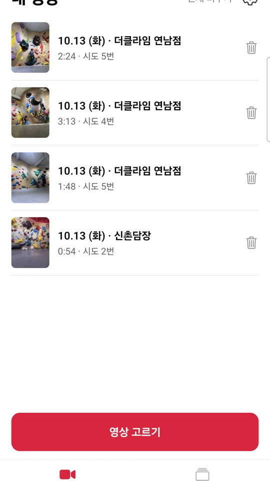
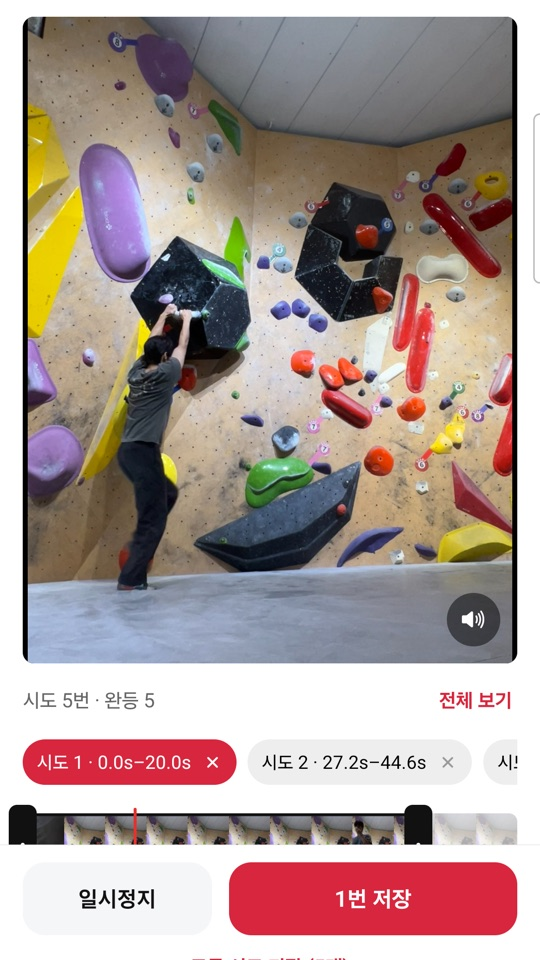

볼더링 영상,
올리기 전에 앞뒤 자르느라
귀찮으셨죠?
영상을 고르면 시도마다 알아서 잘라 주고, 다녀온 암장과 완등 기록이 쌓여요.
무료·아이폰·갤럭시


01영상 자동 컷
긴 영상을 시도마다 알아서 잘라요. 앞뒤 손질은 조절 바 한 번이면 끝.
02클라이머 따라가기
삼각대로 찍은 영상도 들고 찍은 것처럼 나를 따라가는 세로 클립으로.
03암장 도감
다녀온 암장이 도감처럼 쌓이고, 암장별 난이도 표와 완등 기록을 다시 봐요.
이렇게 써요
- 1영상 고르기 · 사진 앱에서 오늘 찍은 영상을 고르면 끝
- 2시도별로 확인 · 알아서 잘린 구간을 보고 앞뒤만 살짝 조절
- 3저장 · 올리기 좋은 클립이 사진 앱에 들어가고 완등 기록이 남아요
영상 분석은 폰 안에서
원본 영상은 올리지 않아요
전국 암장 540곳